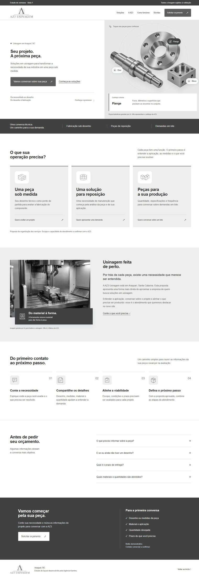

Ideia 1Disponível para avaliar
Precisão aplicada
Uma entrada objetiva, seguida das demandas do cliente, da apresentação da empresa e do caminho para pedir um orçamento.
- Peças com pontos interativos para explorar na abertura.
- Soluções organizadas pelo que o cliente precisa.
- Imagem de máquina e etapas ilustradas antes do contato.
- Leitura adaptada ao computador e ao celular.